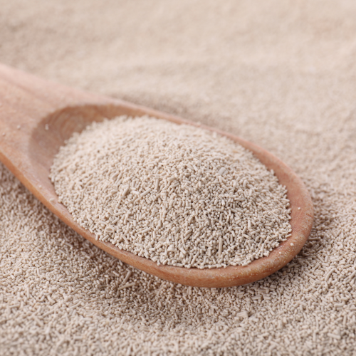
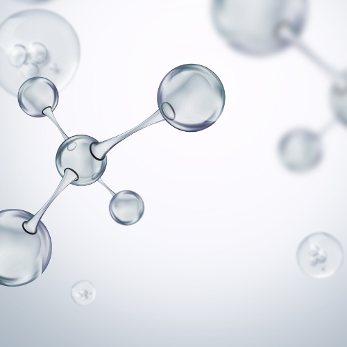

Multivitamin Supplement for Dogs
Healthy hip & joints + calcium + collagen

Pamper your furry friend with this delectable and nutritious treat that complements their daily diet!
These treats aren’t just a delightful indulgence; they also promote your pet’s overall well-being. Packed with essential nutrients and beneficial substances, they support the optimal functioning of all bodily systems.
Ingredients: Dried feed yeast, Calcium phosphate, Lactose, Dextrose, Flavorings, Denatured tropocollagen, Ascorbic Acid, Vitamins and minerals, Antioxidant (Tocopherol Acetate).
Key Ingredients and their benefits:

Yeast
This natural food supplement is a powerhouse of vitamins (including all B vitamins, as well as D, E, and P), amino acids, macro- and micronutrients, and antioxidants. It promotes overall health, strengthens the immune system, optimizes digestion and metabolism, and even contributes to a thick, shiny coat.

Collagen
Collagen is a crucial protein that plays a vital role in maintaining and strengthening the body's structural framework. It is the primary component of connective tissues, including bones, skin, hair, and cartilage. Collagen's unique properties contribute to various essential functions.

Vitamins C
Vitamin C is an essential nutrient that plays a crucial role in maintaining overall health and well-being. It is renowned for its potent antioxidant properties, which help to protect cells from damage caused by free radicals. Additionally, Vitamin C serves as a vital cofactor for collagen synthesis, a protein that provides structure and strength to connective tissues throughout the body, including skin, bones, cartilage, and blood vessels.
By incorporating these treats into your pet’ routine, you’re not just giving them a tasty snack; you’re actively contributing to their well-being!
Feeding Guidelines:
This supplement can be given with any type of diet (raw food, dry food, etc.) and can be administered at any time, regardless of when the main meal is fed.
Recommended for a daily use throughout the year at a dosage of 5-6 tablets. If necessary, during periods of increased physical activity, stress, or recovery, the dosage can be increased by 1.5-2 times.
Storage Conditions and Shelf Life:
36 months (in original sealed packaging) · ≤75% humidity · 14°F–86°F
Net Weight: 10.5 oz (300g) · 600 tablets
Guaranteed Analysis per 1 tablet:
FOR ANIMAL USE ONLY. KEEP OUT OF REACH OF CHILDREN.
TY BY 191446436.004-2022. PRODUCT OF BELARUS.